文字
背景
行間

_
オーストラリア研修１２日目
 平成３０年７月３１日（火）午後、現地校１０年生、約１００人の生徒に向けて、SGH課題研究の研究成果（途中経過）を発表しました。
平成３０年７月３１日（火）午後、現地校１０年生、約１００人の生徒に向けて、SGH課題研究の研究成果（途中経過）を発表しました。オーストラリア研修１１日目
 平成３０年７月３０日（月）本日も全員元気に研修に参加しています。写真は、「こたつ」「いただきます」「お疲れ様です」「なつかしい」「もったいない」「しょがない」「単身赴任」「ハンパない」「やばい」等、日本の言葉について英語で説明しているところです。
平成３０年７月３０日（月）本日も全員元気に研修に参加しています。写真は、「こたつ」「いただきます」「お疲れ様です」「なつかしい」「もったいない」「しょがない」「単身赴任」「ハンパない」「やばい」等、日本の言葉について英語で説明しているところです。 オーストラリア研修８日目
 平成３０年７月２７日（金）オーストラリア研修８日目を迎えました。生徒は今日も全員元気に活動しています。写真は今日の活動の様子です。現地校８年生と映画について話し合いをしているところです。生徒は英語を使うことにも慣れ、英語によるコミュニケーション能力の向上が見られます。
平成３０年７月２７日（金）オーストラリア研修８日目を迎えました。生徒は今日も全員元気に活動しています。写真は今日の活動の様子です。現地校８年生と映画について話し合いをしているところです。生徒は英語を使うことにも慣れ、英語によるコミュニケーション能力の向上が見られます。オーストラリア研修（日本文化プレゼンテーション）
 平成３０年７月２６日（木）オーストラリア研修に参加している生徒は全員元気に活動しています。本日は、日本の文化を現地の高校生に紹介するプレゼンテーションを行っています。
平成３０年７月２６日（木）オーストラリア研修に参加している生徒は全員元気に活動しています。本日は、日本の文化を現地の高校生に紹介するプレゼンテーションを行っています。 今日もオーストラリアで元気に活動中


ナンボークリスチャンカレッジでの研修が始まりました
 平成30年７月23日(月)オーストラリア研修では、予定どおりナンボークリスチャンカレッジでの研修が始まりました。英語力の向上、異文化理解の深化、課題研究の深化を目指します。参加生徒は全員元気に研修に参加しています。
平成30年７月23日(月)オーストラリア研修では、予定どおりナンボークリスチャンカレッジでの研修が始まりました。英語力の向上、異文化理解の深化、課題研究の深化を目指します。参加生徒は全員元気に研修に参加しています。 オーストラリアに無事到着しました
オーストラリアに出発しました
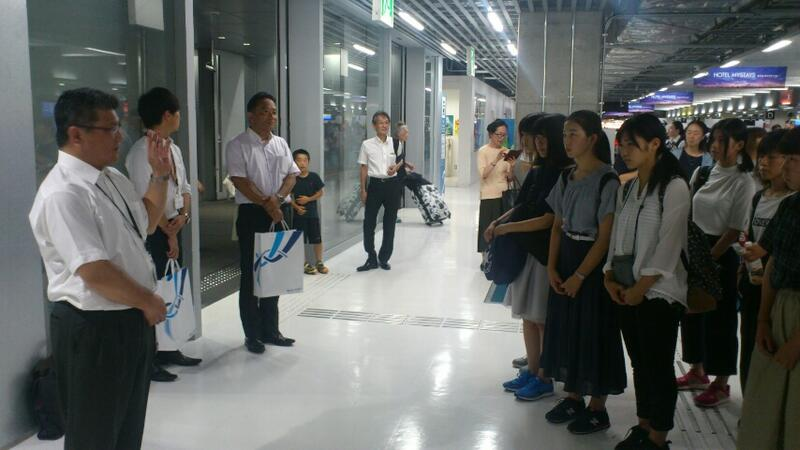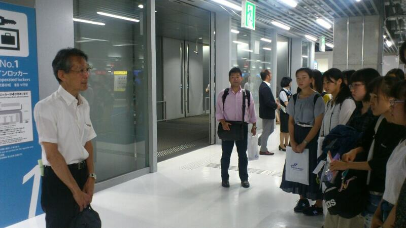
 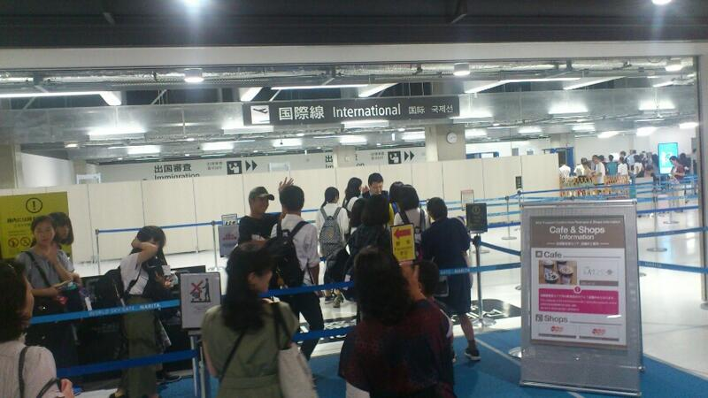
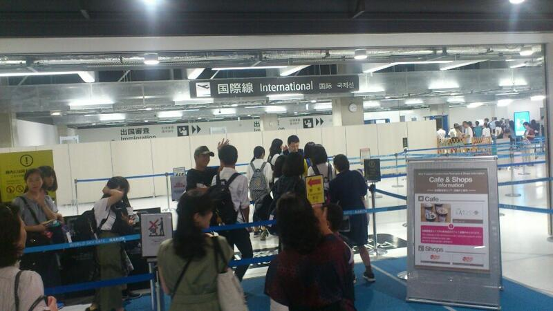 野球応援練習
１回戦は、７月１３日（金）青葉の森球場第１試合です。お時間のある方は、野球部の応援をよろしくお願いします。また、伝統校らしい応援も御覧ください。
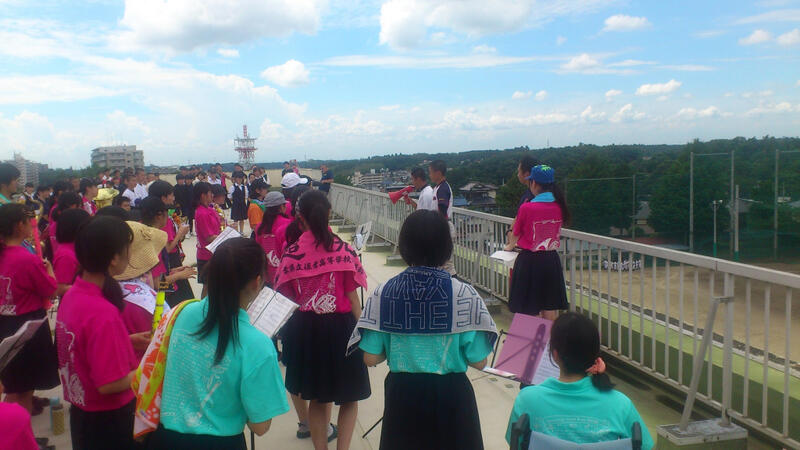

生徒会選挙が行われる
平成３０年７月３日（火）６・７時間目に第７１回千葉県立佐倉高等学校生徒会選挙立ち会い演説会及び投票が行われました。体育館の気温は上がる一方でしたが、それを上回る熱のこもった立候補者と推薦者の演説が体育館に響き渡りました。ある生徒は全校生徒をうなづかせ、ある生徒は歓声を上げさせつつ、自分の主張を伝えました。投票の結果はどうあれ、すばらしい演説会でした。
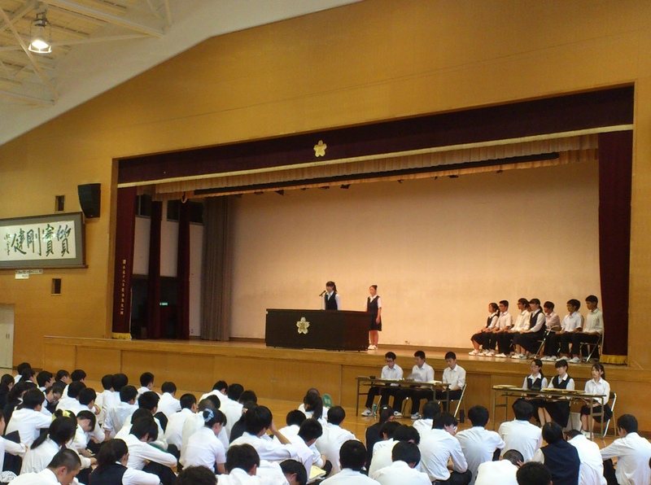
こちらも御覧ください → 校長花ごよみ
地域交流懇談会（１０００か所ミニ集会）
最初に、本校校長が学校概況について説明し、出席された方々に本校の取組や生徒の様子等について御理解いただきました。
協議では、地域の方から、生徒の通学に関すること、本校の施設等に関することについて御意見をいただきました。また、防災に関することについて佐倉市危機管理室の方にお話しいただき、地域との連携、本校が避難所になったときの対応、生徒が通学途中で地震に遭ったときの対応等について、意見交換を行いました。
科学の甲子園Jr 学習会
物理分野（大和地伸雄教諭）では、水風船を３階から落下させたときに割れないような構造物を紙で製作しました。生物分野（西村さつき教諭）では、ちりめんじゃこの中に混ざっているタコやイカ等の小さな生物を探しました。
８月下旬には、化学分野と数学分野の実習が行われる予定です。
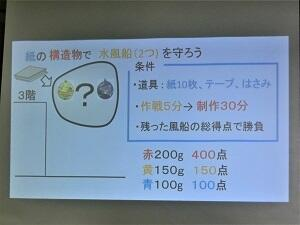


Girls’ Rocketry Challengeプログラム ロケットを飛ばしました
第３期Girls’ Rocketry Challengeプログラムに本校の生徒が参加しています（任命式・講習会の様子はこちらからご覧いただけます）。
６月１８日（月）に株式会社リバネスの方がアドバイザーとして来校され、モデルロケット全国大会に向けての計画を相談しました。また、今回は初めて本校のグラウンドで発射台を制作し、ロケットを飛ばしました。 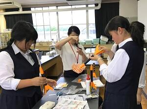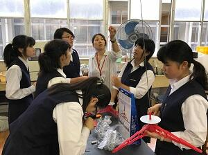
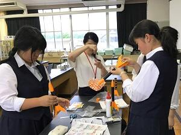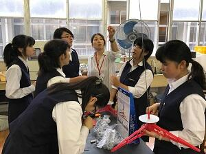
鍋山祭一般公開
昨日の校内発表に引き続き、鍋山祭一般公開が行われました。
本日は、３３２８名の方に御来校いただきました。お休みのところ御来校いただいた上に、すばらしいマナーで御覧いただいたことに改めて感謝いたします。
生徒の皆さんも朝早くから準備にとりかかり、公開時には一生懸命発表に取り組み、すばらしい文化祭になりました。文化委員長さんを始め文化委員の皆さん、文化委員会の顧問の先生方、受付や校外で案内をしている生徒の皆さん、早朝から駐車場の案内をしている先生方、雨の中でゴミ処理をしている生徒の皆さんや先生方など多くの方が鍋山祭の運営を陰で支えくださいました。ありがとうございます。
「鍋山大賞」は３年B組でしたが、すべての皆さんに賞を差し上げたい、そんな気持ちにさせてくれる文化祭でした。
鍋山祭校内発表
今日は、各クラス・部活動・有志団体で様々な趣向を凝らした発表が行われました。
明日もさらに熱のこもった発表をする予定です。お楽しみに。
一般公開は、明日（６月２３日）の午前９時からです。ぜひお越しください！！
（公共の交通機関をご利用ください。）
鍋山祭が始まりました
本日は鍋山祭の校内発表日です。
オープニングセレモニーでは、生徒が制作したミュージックビデオから始まり、音楽選択者の合唱や吹奏楽部の演奏などが披露され、会場は大いに盛り上がりました。


部活動も頑張っています！
平成３０年６月１５日（金）～１７日（日）に行われた千葉県高等学校総合体育大会（県大会）に、柔道部、レスリング部、卓球部、ソフトボール部、バレー部（男・女）、ソフトテニス部（男・女）、バドミントン部、弓道部、バスケットボール部（男・女）が出場しました。
多くの部が地区予選を勝ち抜き、県大会に出場しています。どの部も全力を尽くして頑張りました。その中で上位成績を残した部は次のとおりです。
ソフトテニス部 男子団体 県９位
バスケットボール部 男子 県ベスト１６
また、音楽部が本校同窓会の鹿山会総会後に歌声を披露しました（写真）。
 こちらも御覧ください！ → 校長花ごよみ へ
こちらも御覧ください！ → 校長花ごよみ へ鍋山祭のポスターが完成しました
鍋山祭（文化祭）のポスターが完成しました。
今年のテーマは
『桜梅桃李 ～佐倉にしかない花を～』
美術部の生徒がデザインしてくれました。６月２３日（土）に一般公開します。ご来校をお待ちしております。
事前申し込みは不要です。
ご来校の際は上履きをご持参ください。また、駐車場が手狭なため、公共の交通機関をご利用ください。
鍋山祭（文化祭）まであと１０日！
平成３０年６月２３日（土）午前９時～午後２時３０分 一般公開します！！
お待ちしております。
佐倉市選挙管理委員会と協働した政治・経済の授業
 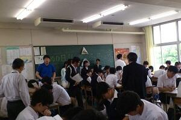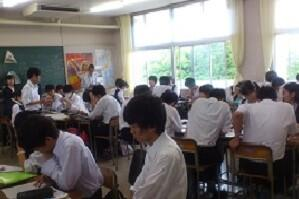
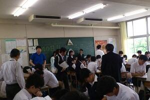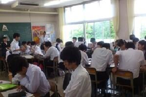
第３期Girls’ Rocketry Challengeプログラムに参加します
「Girls’ Rocketry Challengeプログラム」は世界25カ国で科学教育に用いられているモデルロケットの開発によって、ものづくりの楽しさを知るとともに、物理・数学に関する知識を楽しみながら深めることを目指したものです。
オリジナルのモデルロケットの開発、制作に取り組み、今年１０月に行われる全国大会に挑戦します。
５月１２日（土）任命式・モデルロケット講習会に参加しました。
モデルロケットに関する講義を受け、従事者資格（ライセンス）を取得しました。また、専門家スタッフや他校の生徒との交流もありました。
 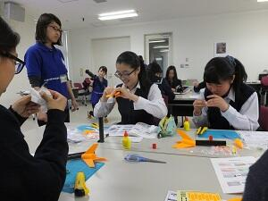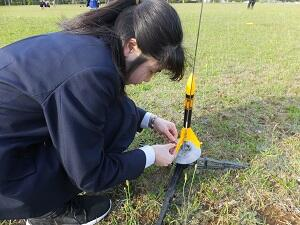
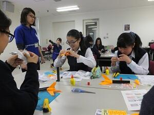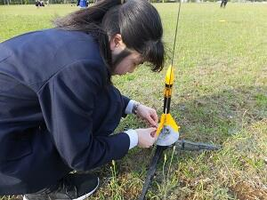５月１９日（土）JAXA宇宙航空研究開発機構・筑波宇宙センターで行われたモデルロケット全国大会を見学しました。
「Girls’ Rocketry Challengeプログラム」第２期に参加されている他校のチームから情報をたくさんいただきました。より良いロケットを目指して頑張ります！

鍋山祭（文化祭）まであと２週間！
朝や昼休み、放課後には、校内に歌声（ミュージカルの練習）や芝居の練習の声が響き渡っています。文化祭で練習成果を披露する部活動の練習にも熱が入ってきました。
左の写真は書道部です。何の準備をしているのでしょう。右は３年生のあるクラスです。何を作っているのでしょう。当日皆さんの目で確かめてみてはいかがでしょうか。ぜひいらしてください。お待ちしております。
鍋山祭は平成３０年６月２３日（土）午前９時～午後２時３０分公開！
お楽しみに。
壮行会が行われる！
平成３０年６月6日（水）７時間目に体育館で壮行会が行われました。
６月９日（土）・１０日（日）に精進湖カヌー競技場（山梨県）で行われる関東高等学校カヌー大会に出場するカヌー部選手が紹介され、校長と生徒会長から激励の言葉が送られました。選手代表が大会に向けた抱負を述べた後、応援委員（ラグビー部中心）からエールと第一応援歌が送られました。
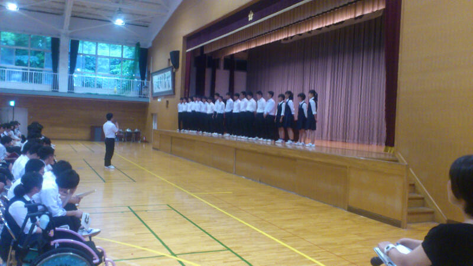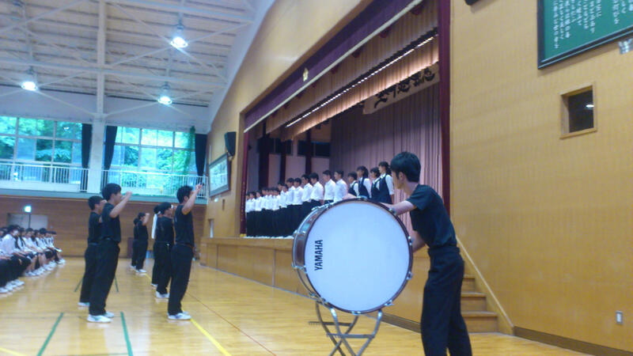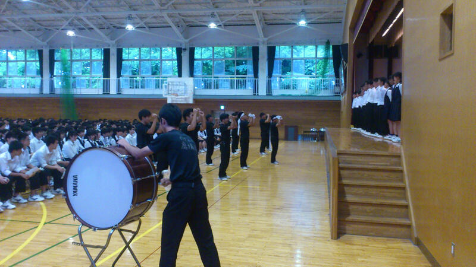 カヌー部関東大会県予選報告 へ
生徒総会が行われました。
平成２９年度生徒会活動報告、各委員会活動報告、会計報告、平成３０年度生徒会活動計画、各委員会活動計画、予算案について審議され承認されました。また、部活動に関する提案があり審議の結果可決されました。


 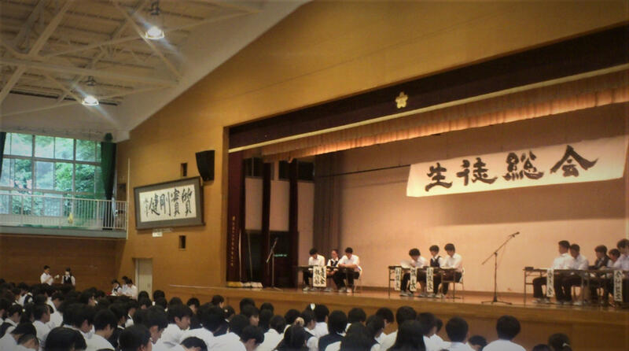
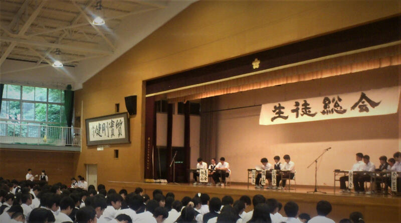 初任者研修の会場になりました
平成３０年６月6日（水）、本校が初任者研修の会場となりました。
今年度千葉県の高等学校に採用された英語の先生９名が来校しました。
３時間目に本校羽計教諭の１年生の授業を参観し、その後、羽計教諭の指導・助言のもと、午後4時まで英語の教科指導についての研修が地域交流施設で行われました。
こちらもご覧ください → 校長花ごよみ へ
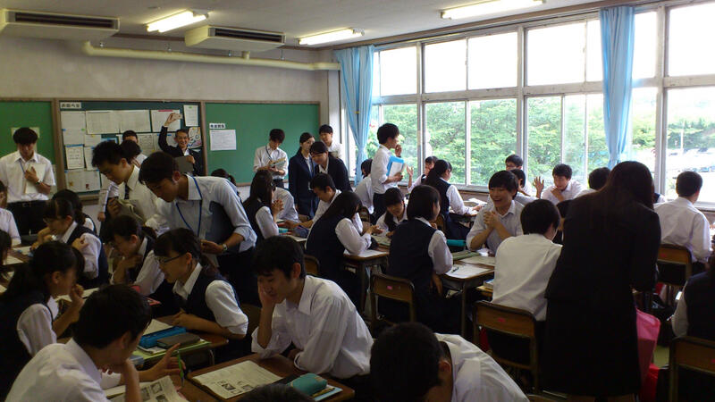
授業公開・ＰＴＡ総会・進路講演会
こちらも御覧ください！→ 校長花ごよみ
ドイツ･イギリス研修報告会（GL探究）
平成３０年５月８日（火）６限に、３月に行われたSGHドイツ･イギリス海外研修の報告会を行いました。
研修参加者が１・２年生を対象に研修の内容等について報告しました。ドイツ海外研修では実際に現地で実施したプレゼンテーションやフィールドワークについて報告し、イギリス海外研修ではフィールドワークやディスカッション等について報告しました。
いずれの研修でも、課題研究を深めたり、貴重な体験をしたりすることができたことが伝わりました。１年生は課題研究のテーマを考えることや海外に目を向ける意識を高めることができ、２年生は、課題研究を深めるためのヒントを得ることができたようです。
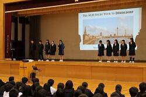


こちらも御覧ください！→ 校長花ごよみ
教育長・次長来校
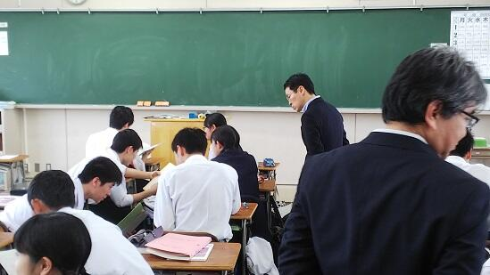
こちらも御覧ください！→ 校長花ごよみ
ドラードカレッジ来校
英語の授業では生徒と交流をし、午後は書道の体験も行いました。
書道体験ではなれない毛筆に苦戦しながらも見事な作品を作り上げていました。
放課後は地域交流施設で本校生徒の案内のもと、展示室を見学しました。
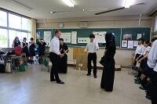
 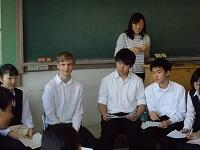
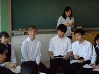


サイエンスダイアログ実施しました。
「サイエンスダイアログ」は、日本学術振興会主催で、世界各国から日本の大学･研究機関で研究している若手研究者を各学校に派遣し、自身の研究や自国の紹介を講義するプログラムです。本校では、理数科生徒を中心に年間数回実施しています。
4月23日（月）に理化学研究所で天然資源系薬学の研究を行っているDr. Eva KNOCHをお招きし、理数科3年生を対象に実施しました。植物が酵素を利用し有効成分を活用していることなどを講義するだけでなく、生徒の考えを聴きつつ導いてくれました。
また、スプラウトを用いたペーパークロマトグラフィを各グループごとに実施させ、生徒に自身の研究の一端を体験させてくれました。


４月１７日「佐倉を知る」を行いました
４月１７日（火）に、１学年行事『佐倉を知る』を行いました。本校、正門を出発して３つのコースに分かれ、歴史民俗博物館まで徒歩で歴史散策活動を行いました。歴史民俗博物館での見学も含めて、身近な地域の歴史や文化への理解を深めることができました。


 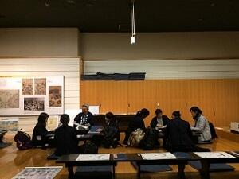
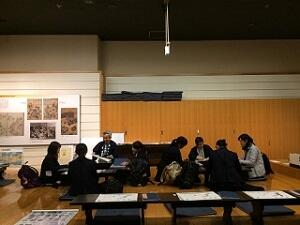 入学式が挙行されました
普通科２８６名、理数科４０名の入学が許可されました。
式のあとに校章贈呈式が行われ、本校同窓会鹿山会会長より校章が贈呈されました。
（写真は本校写真部が撮影）
 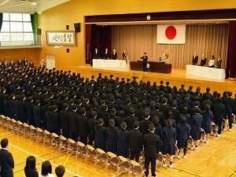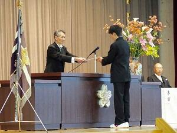
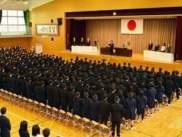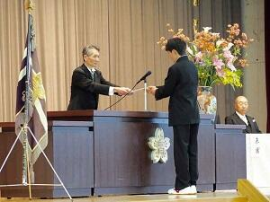 平成２９年度ＳＧＨイギリス海外研修に出発しました

平成２９年度SSH・SGH合同課題研究発表会が開かれました。
平成３０年３月１９日（月）に多数の来賓・助言者の方々をお招きして「平成２９年度SSH・SGH合同課題研究発表会」を開催しました。
初めにSGH・SSHから各２チームの口頭発表を行いました。SGHは英語を用いた発表、SSHはPC技術を駆使したプレゼンと両者の特徴を上手く打ち出した口頭発表でした。その後SSHは体育館で理数科２年生がポスター発表を行い、SGHは第二体育館・多目的室等で口頭発表やポスター発表を行いました。次年度以降は両者の融合をより一層深めていきたいと思います。
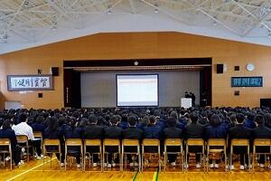


SGHドイツ海外研修は順調です。
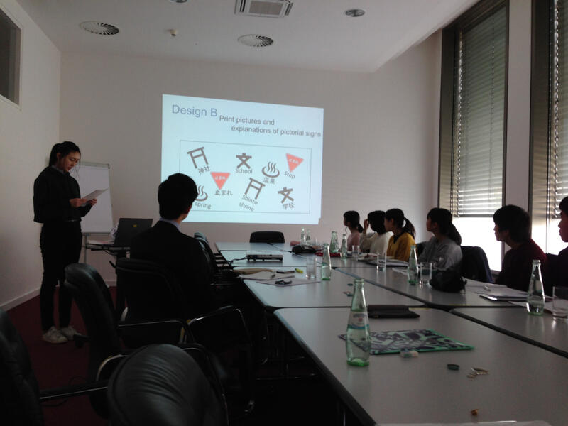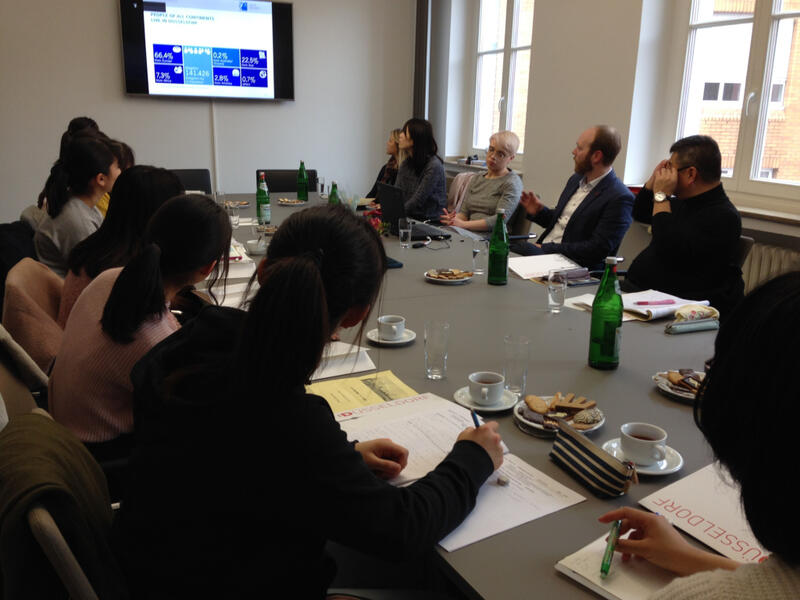

音楽部 第８回定期演奏会

佐倉高校音楽部 第８回定期演奏会 |
♪ ア・カペラ・コーラス＆ミュージカル「マイ・フェア・レディ」♪ |
皆様お誘い合わせの上、ご来場ください |
| 日 時 平成３０年３月２５日（日）１３時３０分開演（１３時開場） |
| 会 場 プリミエール酒々井文化ホール |
| （ＪＲ酒々井駅から徒歩１０分、京成酒々井駅から徒歩１５分） |
| 印旛郡酒々井町中央台３－４－１ TEL ０４３－４９６－８６８１ |
★全席自由、入場無料★ |
SGHドイツ海外研修に出発しました。
 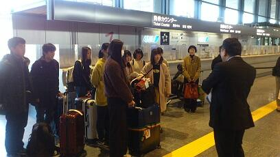
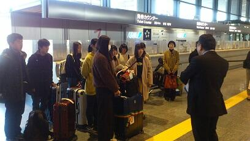

第７０回卒業証書授与式
普通科２８２名、理数科３８名が卒業しました。
（写真は本校写真部が撮影）
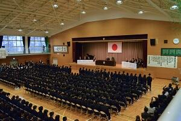


第７０回記念千葉県小・中・高校書初め展覧会で市長賞を受賞
１月２８日（日）に千葉市稲毛区の県総合スポーツセンター体育館で行われた千葉県小・中・高校書初め展席書大会に、本校から学校代表として書道部１年の細野優香さん、同２年の髙橋彩乃さんと永嶋琳さんの計３名が出場しました。その結果髙橋さんが高校生としては６番目となる四街道市長賞、細野さんと永嶋さんが千葉日報社賞を受賞しました。
第３回 国際研究発表会
２月１８日（日）、千葉大学で行われた「第３回国際研究発表会」に普通科５名、理数科３名の生徒が参加しました。午前は、英語でポスター発表を、午後は、ASEAN からの先生や他校の生徒と共に、地球温暖化についてディスカッションと発表を英語で行い、交流を深めました。
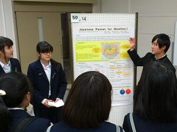


 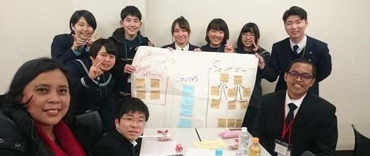
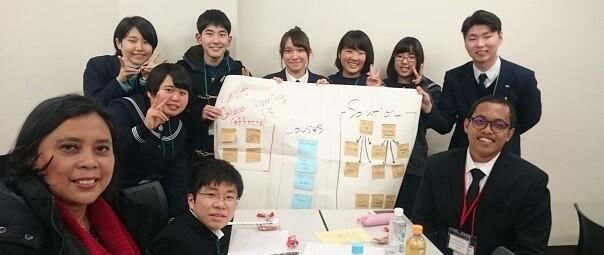 ２年理数科海外研修に出発しました
１月１６日から２年理数科全員が海外研修でシンガポールに向かいました。成田空港ではＮＡＡ鹿山会の方々から激励を受け、元気に出発しました。
１７日午前中は Sea aquarium を訪ね、見学コースだけでなく、バックヤードの様子も視察する事が出来ました。また、忙しい研修の合間にシンガポールならではの施設も見学しました。
ホテルに戻ってからは、明日訪問する高校で行う課題研究の発表会に向けてプレゼン練習に励みました。
 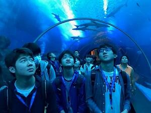
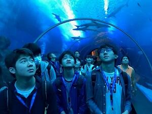 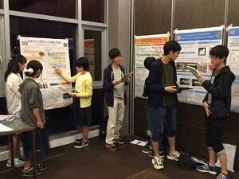
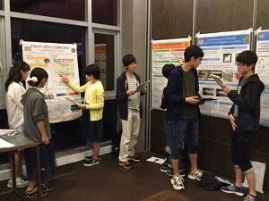 マレーシア ＳＭＫ ＳＥＫＳＹＥＮ１８校来校
防災避難訓練実施
はじめに校舎からの出火を想定した第１グランドへの避難訓練。
その後、１学年は消火器体験、２学年は煙体験と分かれての防災体験を行いました。
消火器体験はオイルパンの炎を消火器噴射で消す実践的なもの。煙体験は白煙（無害）が充満して視界０となったテントの中をくぐり抜けるというもの。
いずれも火災への遭遇に備えた実のある体験となったようです。


修学旅行報告
１４日…奈良を中心にクラスごとに巡り、多武峰に宿泊しました。
１５日…奈良・京都を班ごとに巡り、宿泊地を京都に移しました。
１６日…京都市内を班ごとに巡りました。寒い日でしたがどの班も予定どおりに目的の場所に行くことができました。中身の濃い体験や見学等ができたようです。
１７日…クラスごとに京都を巡りました。着付け体験をするクラスや和菓子作りを体験するクラスなどそれぞれでした。午後、一行は、後ろ髪を引かれる思いを抱きつつ新幹線に乗車し、夕刻無事東京駅に到着しました。
SGH海外研修（オランダ派遣）帰国

11月9日に出国しオランダで研修を行っていた１年生５名が無事帰国しました。最初のうちは、英語でのコミュニケーションや文化の違いによるとまどい等があったようです。しかし、フィールドワークを経て、日本とオランダの価値観や考え方の相違を学んだり、国際青少年会議に参加することにより、参加国それぞれの教育や学校の仕組み等について知るとともに、参加国の高校生と意見を交わしたりすることができました。いろいろな意味で成長できた研修でした。今後は報告等を行うことで、研修を還元します。
修学旅行 経過報告
初日はクラス別に奈良を巡りました。雨だったため、予定を変えたり十分な見学ができなかったりしましたが、夕刻には雨が上がり、何とも風情のある景色を眺めながら多武峰観光ホテルに着きました。
15日は、班に分かれて奈良と京都を巡りました。風が少し冷たく感じるものの青空のもと、生徒は行く先々できれいに色づいた木々を愛でつつ、歴史の深さを感じることができたようです。宿を京都の聖護院御殿荘に移し2泊します。
16日は、班別に京都を巡ります。8時30分に予定どおり全員が宿を出発しました。
千葉大学 数理科学コンクール 受賞

今夏行われた第20回千葉大学数理科学コンクールの審査結果が11月3日に発表され、本校理数科2年 中野春樹君・早川航平君のペアが機巧賞（参加チームの中から2チームのみ）を受賞しました。
数理科学コンクールは、自由にゆったりと考える時間を設け、科学的思考だけでなくユニークなアイデア、柔軟な発想などを多面的に評価するコンクールです。
昨年度は課題の部で2名の受賞者が出ましたが、今年は、ロボットの部においてC言語を用いロボットを制御するアイデアやプログラムの出来が評価されました。
SGH海外研修（オランダ派遣）に出発しました。
参加者は、第１学年生徒５名です。
出発式では、ＮＡＡグループ鹿山会の方から、お言葉をいただくとともに、本校の先輩として激励の言葉もいただきました。
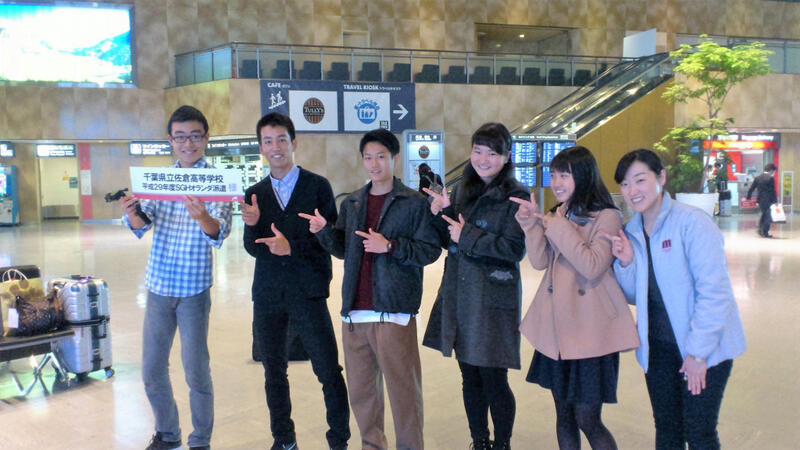

今日から１１月１９日（日）までの１１日間、ライデン・アムステルダムでのフィールドワーク（ライデン大学にて学生とのディスカッション、シーボルト博物館など）、ドラードカレッジにて青少年国際会議参加等の研修が行われます。
 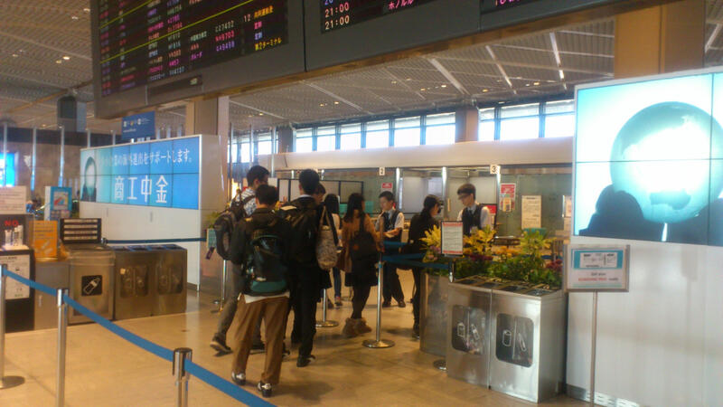
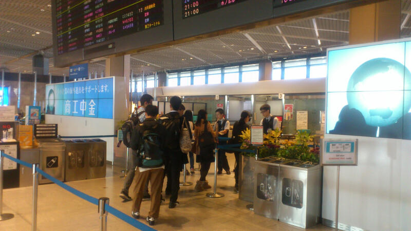 平成２９年１０月２１日（土）科学の甲子園千葉県大会
千葉県総合教育センターで行われた第７回科学の甲子園千葉県大会に２年生有志（８名）と天文気象部（８名）の２チームが参加しました。当日は、台風２１号接近に伴い雨模様の天気でしたが、両チームとも筆記試験（物理・化学・生物・地学・数学・情報の６分野、６０分間）と実技試験（与えられた課題にチームで相談して取り組む、１２０分間）に挑戦しました。県内の１５校２４チームが参加しました。
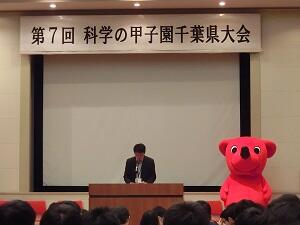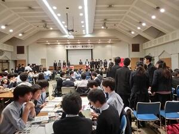
平成３０年度入学者選抜について
平成３０年度入学者選抜の選抜・評価方法を掲載しました。 こちらからご覧ください。